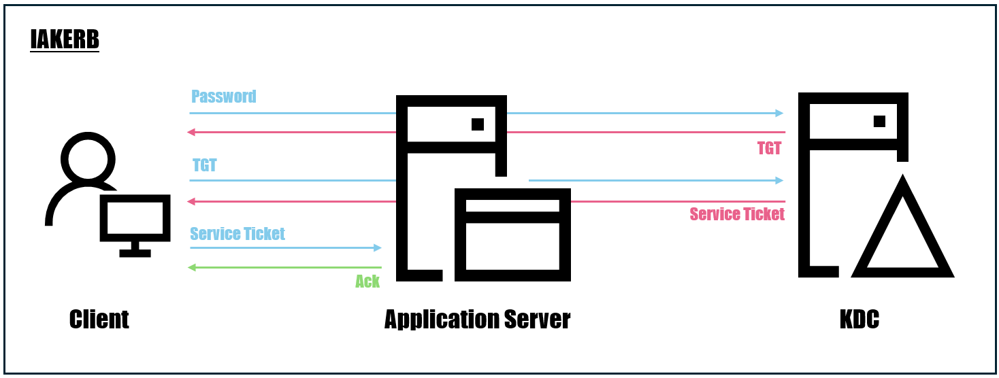
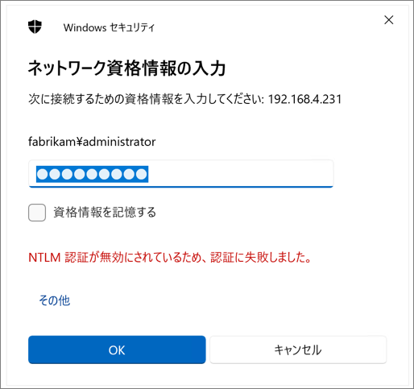

2025/10/10 更新
以下の機能追加等に伴い本記事の内容を更新しました。
・NTLM監査イベントの追加
・特定の状況における段階的な NTLMv1 無効化
本記事はマイクロソフト社員によって公開されております。
こんにちは。Windows Commercial Support Directory Services チームです。
今回は、先般非推奨となった NTLM の廃止に向けた対応について、ご参考としていただける情報についてご案内いたします。
今後の対応について、現時点で詳細が未確定な部分もございますので、必要に応じてブログの内容はアップデートする予定です。
1. NTLM 廃止の背景
Windows 認証のセキュリティを向上させるため、弊社は NTLM 認証を使う必要があるシナリオに対処して、最終的に NTLM を無効化し、すべての認証をよりセキュアな Kerberos で行えるようにする目標がございます。
NTLM はチャレンジ/レスポンス方式を採用した認証プロトコルとなりますが、古くから利用されている背景もあり、
近年では多くの脆弱性や問題が確認され、また、相互認証のようなセキュリティ的に強度の高い実装はされておらず最新の暗号アルゴリズムにも対応しておりません。
このように、NTLM では最新のセキュリティ要件に対応することができなくなってしまっていることから、
生体認証やパスワード レスといったセキュリティ強度の高い認証方式を採用でき、より拡張性がある Kerberos の利用を標準化させることで、全ての Windows ユーザーの認証におけるセキュリティ レベルを向上させたいという背景がございます。
現在、弊社では Kerberos を使用できないシナリオや、NTLM にフォール バックするシナリオに対処するため、
Kerberos を使用した初期認証とパススルー認証 (IAKERB) および Kerberos 用のローカル鍵配布センター (Local KDC) といった新機能の導入も計画しております。
最終的な目標は、NTLM を使用するシナリオを全て排除することとなりますが、後述の NTLM 廃止に向けた対応についてご確認いただき、お客様環境においても移行の準備をご検討いただけますと幸いです。
2. NTLM 廃止までのスケジュール
弊社は NTLM が機能開発の対象ではなくなり、非推奨の機能であることを 2024 年 6 月に公開情報に明記しました。
詳細につきましては、以下の公開情報をご参照ください。
また、Windows 11 24H2 / Windows Server 2025 から NTLMv1 が削除されたことを 2024 年 12 月に公開情報に明記いたしました。
この変更により、Windows 11 24H2 / Windows Server 2025 からは NTLMv1 による認証要求が行われなくなりました。
なお、グループ ポリシー “ネットワーク セキュリティ: LAN Manager 認証レベル”・ レジストリ “LmCompatibilityLevel” の設定値に関わらず、上記の動作が適用されます。
今後も段階的な NTLM の廃止が計画されておりますが、2024 年 12 月時点では以降の詳細なロードマップは公開されておりません。
今後公開される情報が更新されましたら、本ブログにおいてもご案内させていただきます。
3. NTLM 廃止後の代替機能
NTLM の廃止に伴い、より安全で信頼性の高い認証プロトコルである Kerberos への完全移行が求められます。
弊社では、この移行をスムーズに進めるために、IAKERB および Local KDC を活用した対応策を導入予定です。
機能を利用するための要件や設定方法については現時点で公開されておりませんが、各機能の概要について以下にご案内いたします。
また、IP アドレスを指定した接続において Kerberos を利用する方法が既に用意されておりますので、本機能についても後述いたします。
IAKERB
アプリケーション サーバーへのアクセスに Kerberos が用いられる場合、クライアントは事前に KDC へ接続してチケットを入手する必要があります。
複雑なネットワーク構成の環境においては、このクライアントと KDC 間のネットワーク接続が課題となる場合があり、NTLM を利用せざるを得ない要因ともなっています。
IAKERB は Kerberos の拡張プロトコルであり、Kerberos チケットの取得において事前に KDC へ接続しなければならない状況に対応するもので、多様なネットワーク トポロジにおける Kerberos の利用をサポートします。
IAKERB では、クライアントが KDC にアクセスできない場合、アプリケーション サーバーがプロキシとして機能し、KDC と通信を行います。具体的には、クライアントがアプリケーション サーバーに Kerberos 認証要求を送信し、アプリケーション サーバーがその要求を KDC に転送します。
KDC は応答をアプリケーション サーバーに返し、それがクライアントに伝えられます。

Local KDC
ローカル アカウントやオフラインのコンピューターにおける認証においては、現状は NTLM を利用せざるを得ないシナリオが存在します。Local KDC は、このようなローカル アカウントやオフライン コンピューターの Kerberos 認証をサポートするための機能です。
各 Windows コンピューターに KDC の機能を持たせることで、ローカル ユーザー アカウントに対する Kerberos 認証を実現します。
これにより、ドメインに参加していないコンピューターや、オフラインのコンピューターに対して Kerberos 認証を利用させることが可能となります。
IP アドレス指定の接続で Kerberos を利用させる
クライアントがリソースにアクセスする際、ホスト名ではなく IP アドレスを指定した場合、Kerberos は用いられずに NTLM で認証される動作となります。
ユーザーによる操作であればホスト名を指定する運用に変えることもできますが、アプリケーションでハードコードされている状態であれば、NTLM が利用できなくなることで影響が及ぶことが考えられます。
このような状況に対応するために、IP アドレスが指定された場合も Kerberos を用いるように変更できる機能が用意されておりますので、本機能を利用するための設定方法を以下にご案内いたします。
なお、本機能を利用できる OS バージョンは Windows 10 バージョン 1507、Windows Server 2016 以降となります。
[1] クライアント側でのレジストリ設定
リソースへのアクセス元となるクライアント側で、以下のレジストリを設定します。
キー：HKLM\SOFTWARE\Microsoft\Windows\CurrentVersion\Policies\System\Kerberos\Parameters
名前：TryIPSPN
種類：REG_DWORD
値：1上記レジストリは、以下のコマンドで設定が可能です。
1 | reg add "HKLM\SOFTWARE\Microsoft\Windows\CurrentVersion\Policies\System\Kerberos\Parameters" /v TryIPSPN /t REG_DWORD /d 1 /f |
[2] SPN の登録
SPN (Service Principal Name) は、Kerberos 認証においてサービスを識別するために利用される識別子です。
ドメインのアカウントの属性値として、この SPN を登録する必要があります。
以下のコマンドで設定が可能です。<サービス> の箇所には対象のコンピューターでホストするサービスに対応する値を指定する必要があります。
1 | Setspn -s <サービス>/<IP アドレス> <ドメイン アカウント> |
Negotiate SSP
アプリケーションの実装において NTLM が利用されている場合、Kerberos が利用されるように変更を行う必要があります。
AcquireCredentialsHandle 関数を呼び出す際に NTLM の利用がハードコーディングされている場合、これを Negotiate に置換いただくことで対応が可能です。
Negotiate の利用により、Kerberos が利用可能な場合には自動的に使用し、そうでない場合には NTLM にフォールバックするため、
移行の過渡期においてもセキュリティと互換性の両方を確保できます。
4. NTLM 廃止に向けた対応について
[A] NTLM 利用の監査について
NTLM 廃止に向けて、認証に NTLM が利用されているかどうかを判断する場合、以下のような NTLM の監査に関するグループ ポリシーを利用することが有効となります。
対象のグループ ポリシーのパス
[コンピューターの構成] - [ポリシー] - [Windows の設定] - [セキュリティの設定] - [ローカル ポリシー]
グループ ポリシー名 および 設定
(1) [ネットワーク セキュリティ: NTLM を制限する: このドメイン内の NTLM 認証を監査する] の値を「すべて有効にする」
(2) [ネットワーク セキュリティ: NTLM を制限する: 着信 NTLM トラフィックを監査する] の値を「すべてのアカウントに対して監査を有効にする」
(3) [ネットワーク セキュリティ: NTLM を制限する: リモート サーバーに対する送信 NTLM トラフィック] の値を「すべて監査する」
上記グループ ポリシーを設定した状態で NTLM 認証が行われると、ポリシーに従い、イベント ログに後述する監査イベントが記録されます。
この監査イベントを確認することで、NTLM 認証を行っている状況を判断していただくことが可能です。
対象のイベントはイベント ビューアーの以下イベント ログから確認が可能です。
[Applications and Services Log] - [Microsoft] - [Windows] - [NTLM] - [Operational]
(1) [ネットワーク セキュリティ: NTLM を制限する: このドメイン内の NTLM 認証を監査する] の値を「すべて有効にする」
こちらのポリシーをドメイン コントローラーに設定すると、ドメイン内のメンバー コンピューターからの NTLM 認証要求について以下の監査イベントを出力します。
通常、アクセス元、アクセス先コンピューター名と、認証に利用されたユーザー名が記録されます。
1 | ログの名前: Microsoft-Windows-NTLM/Operational |
(2) [ネットワーク セキュリティ: NTLM を制限する: 着信 NTLM トラフィックを監査する] の値を「すべてのアカウントに対して監査を有効にする」
こちらの設定を行うと、設定が適用されたコンピューターに対して NTLM 認証を試行した場合に以下の監査イベントを出力します。
1 | ログの名前: Microsoft-Windows-NTLM/Operational |
以下の ID 8003 のイベントでは、Workstation の値から、NTLM 認証要求元のコンピューター名を確認することが可能です。
1 | ログの名前: Microsoft-Windows-NTLM/Operational |
(3) [ネットワーク セキュリティ: NTLM を制限する: リモート サーバーに対する送信 NTLM トラフィック] の値を「すべて監査する」
こちらの設定は、設定が適用されたコンピューターから、任意のコンピューターに対して NTLM 認証を試行した場合に以下の監査イベントを出力します。
このイベントには、通常、NTLM 認証を試みたユーザー名やアクセス先が出力されます。
1 | ログの名前: Microsoft-Windows-NTLM/Operational |
(2025年9月~) 追加される NTLM 監査イベントについて
以下の公開情報でご案内しているとおり、NTLM の利用状況を監査するイベントが追加されます。
NTLM 認証に関わる以下の観点のログが追加されますが、2025年10月時点では Windows 11 24H2 以降にのみ追加されており、Windows Server 2025 には追加されておりません。
このため、ドメイン コントローラーに関するログは現時点では確認することができません。
・クライアント (NTLM 認証の要求元)
・サーバー (NTLM 認証の要求先)
・ドメイン コントローラー
追加されるイベント ログは既定で有効となりますが、それぞれ以下のグループ ポリシーで有効・無効を制御可能です。
// クライアント・サーバー
[コンピューターの構成] - [ポリシー] - [管理用テンプレート] - [システム] - [NTLM]
-> NTLM 拡張ログ
// ドメイン コントローラー
[コンピューターの構成] - [ポリシー] - [管理用テンプレート] - [システム] - [Net Logon]
-> 拡張されたドメイン全体の NTLM ログを記録する
記録されるイベントの ID は以下のとおりです。
| 情報 | 警告 | |
|---|---|---|
| クライアント | 4020 | 4021 |
| サーバー | 4022 | 4023 |
| ドメイン コントローラー (クロスドメインでの NTLM 認証) |
4030 | 4031 |
| ドメイン コントローラー (自ドメイン内での NTLM 認証) |
4032 | 4033 |
追加されるイベントは既存のイベントと同様に以下イベント ログから確認が可能です。
[Applications and Services Log] - [Microsoft] - [Windows] - [NTLM] - [Operational]
クライアント
1 | ログの名前: Microsoft-Windows-NTLM/Operational |
サーバー
1 | ログの名前: Microsoft-Windows-NTLM/Operational |
ドメイン コントローラー (クロスドメインでの NTLM 認証)
1 | ログの名前: Microsoft-Windows-NTLM/Operational |
ドメイン コントローラー (自ドメイン内での NTLM 認証)
1 | ログの名前: Microsoft-Windows-NTLM/Operational |
[B] NTLM の段階的な無効化について
Windows 11 24H2 / Windows Server 2025 の新機能として、SMB クライアントにおいて NTLM の利用をブロックする機能が実装されています。
この機能により、まずは SMB 通信に限定して NTLM を無効化することが可能となり、環境内の NTLM 廃止に向けた段階的な対応を進めることができます。
また、この設定を利用することで、ブルートフォースやパス・ザ・ハッシュといった攻撃に対する予防効果も期待できます。
- SMB NTLM blocking now supported in Windows Insider
An attacker who tricks a user or application into sending NTLM challenge responses to a malicious server will no longer receive any NTLM data and cannot brute force, crack, or pass hashes.
なお、特定のサーバーのみ NTLM を可能とするといった例外も設定することが可能です。
設定方法につきましては、以下公開情報をご確認いただけますようお願いいたします。
本設定により NTLM の利用がブロックされた場合、以下のようなエラー メッセージが表示されます。

また、以下イベント ログに ID 4015 の警告イベントが記録されます。
[Applications and Services Log] - [Microsoft] - [Windows] - [NTLM] - [Operational]
1 | ログの名前: Microsoft-Windows-NTLM/Operational |
[C] 特定の状況における NTLMv1 利用の段階的な無効化について
Windows 11 24H2 および Windows Server 2025 では NTLMv1 が削除されましたが、MS-CHAPv2 が利用されるケースなど限られた状況では引き続き NTLMv1 由来の資格情報が機能する場合があります。
弊社では、今後このような NTLMv1 由来の資格情報についても段階的に無効化し、完全な NTLM の無効化に向けて対応を進めます。
なお、Credential Guard が有効な環境においては、このような NTLMv1 由来の資格情報は既に利用できないため、以下にご案内する情報は Credential Guard が無効の環境に対してのみ適用されるものです。
Credential Guard の要件が満たされている場合は、その展開と有効化を強く推奨いたします。
セキュリティ強化による変更点
レジストリの追加
以下のレジストリが追加されます。
このレジストリにより、本セキュリティ強化の動作モード(監査/強制)を制御することが可能です。
レジストリ キー：HKEY_LOCAL_MACHINE\SYSTEM\currentcontrolset\control\lsa\msv1_0
種類：REG_DWORD
名前：BlockNtlmv1SSO
値：
0 (監査モード) (既定値)：ログオン ユーザーによる NTLMv1 資格情報の生成が監査されますが、利用は許可されます。監査された場合、警告イベント(ID 4024)が生成されます。
1 (強制モード)：ログオン ユーザーによる NTLMv1 資格情報の生成が監査され、利用が禁止されます。監査された場合、エラー イベント(ID 4025)が生成されます。イベントの追加
以下のイベントが追加されます。
NTLMv1 由来の資格情報が生成された場合、監査モードでは ID 4024 が記録されますが、その利用は許可されます。
強制モードでは ID 4025 が記録され、その利用は禁止されるため、対象の資格情報を利用する機能を利用することはできません。
1 | ログの名前: Microsoft-Windows-NTLM/Operational |
1 | ログの名前: Microsoft-Windows-NTLM/Operational |
スケジュールについて
このセキュリティ強化は以下のスケジュールでの展開を予定しています。
なお、これらは暫定的なものであり、今後変更される可能性があります。
1. 2025 年 9 月：Windows 11 24H2 監査モード
このフェーズでは、Windows 11 24H2 が監査モードで動作します。
BlockNtlmv1SSO を 1 とすることで強制モードへ移行することが可能です。
2. 2025 年 11 月：Windows Server 2025 監査モード
このフェーズでは、Windows Server 2025 が監査モードで動作するようになります。
BlockNtlmv1SSO を 1 とすることで強制モードへ移行することが可能です。
3. 2026 年 10 月：既定強制モード
このフェーズでは、BlockNtlmv1SSO が明示的に設定されていない限り、既定で強制モードとして動作します。
BlockNtlmv1SSO を 0 とすることで監査モードで動作させることが可能です。
以下の公開情報も併せてご確認ください。
求められる対応について
イベントが記録された環境では、VPN や無線 LAN へ接続する際の認証方式に MSCHAPv2 を利用されるなど、NTLMv1 由来の資格情報が利用されています。
イベント中に記録されるプロセスよりどのような機能で利用されているかを特定し、MSCHAPv2 が利用されている場合は EAP-TLS といった証明書ベースの認証方式に移行いただくことをご検討いただけますようお願いいたします。
5. NTLM が利用されるシナリオ例
NTLM は主に次のようなシナリオで使用されます。
(1) ホスト名では無く、IP アドレスを利用してサーバーへアクセスして認証を行っている
(2) ファイアウォールが Kerberos に必要なポートを制限している場合
(3) アクセス先の SPN がドメインコントローラーへ登録されていない
(4) 信頼関係 (外部信頼) 先に関する認証
(5) オンプレミス ドメインに所属していないワークグループ環境内での認証
具体的には、ファイル サーバーへアクセスする際や、リモート デスクトップで他のコンピューターへアクセスする際に、アクセス先を IP アドレスで入力している場合は NTLM での認証となります。
またそれぞれ Kerberos が利用できない場合などは、NTLM にフォールバックされます。
その他、OS 関連では以下に機能毎の認証に関する公開情報がございますため、必要に応じてご参照いただけますと幸いでございます。
SMB
WinHTTP
Failover Clustering
WinRM
印刷
6. 参考リンク
本対応に関して Global のエンジニアからも情報が公開されておりますので、ご参考としていただけますと幸いでございます。
更新履歴
2024/08/22 : 本ブログの公開
2024/12/20 : NTLMv1 削除に関する情報公開に伴う更新 / SMB における NTLM 無効化方法について更新
2025/10/10 : NTLM 監査イベントの追加 / 特定の状況における段階的な NTLMv1 無効化について更新